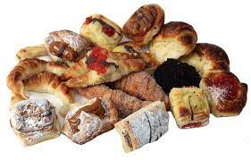
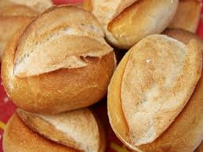

La Rosca
Bienvenidos
Adéntrate en un mundo de aroma y sabor en La Rosca, una panadería que ha cautivado los corazones y los paladares de sus clientes durante décadas. Desde su apertura, La Rosca se ha distinguido por su autenticidad y su dedicación a la excelencia en la panadería. Cada mañana, los maestros panaderos amasan con pasión y maestría para crear productos irresistibles, desde baguettes crujientes hasta suaves croissants y deliciosos bollos recién horneados. Con ingredientes frescos y recetas transmitidas de generación en generación, La Rosca te invita a sumergirte en la magia del pan artesanal y los pasteles exquisitos. Descubre la esencia de La Rosca y déjate seducir por la tentación de nuestros productos horneados excepcionales.Sumérgete en el acogedor ambiente de La Rosca, donde el aroma a pan recién horneado te envuelve y te transporta a un mundo de placer culinario. Nuestro equipo de expertos artesanos trabaja incansablemente, perfeccionando cada detalle para brindarte una experiencia única. Desde los clásicos panes tradicionales hasta las creaciones más innovadoras, cada bocado en La Rosca es una obra maestra de sabor y textura. Además, nuestro amable personal te recibirá con una sonrisa, brindándote un servicio personalizado y garantizando que cada visita sea inolvidable. Descubre por qué La Rosca es el lugar predilecto para los amantes del buen pan y los placeres dulces.
Lo que hacemos:
La Rosca es una panadería única y llena de encanto que deleita a sus clientes con productos horneados excepcionales. Con una larga tradición y un compromiso inquebrantable con la calidad, La Rosca ofrece una amplia variedad de panes frescos, pasteles irresistibles y delicias dulces que hacen agua la boca. Cada creación es elaborada con pasión y cuidado, utilizando ingredientes de la más alta calidad. En La Rosca, la experiencia de nuestros clientes es nuestra máxima prioridad, y nos esforzamos por ofrecer momentos de alegría y satisfacción a través de nuestros productos horneados de primera categoría.Adéntrate en el apasionante mundo de La Rosca, una panadería con una rica historia y un legado de excelencia en la elaboración de productos horneados. En La Rosca, nos enorgullece mantener vivas las tradiciones de antaño y utilizar métodos artesanales que se han transmitido de generación en generación. Nuestro compromiso con la calidad se refleja en cada uno de nuestros productos, desde el aroma tentador hasta el sabor exquisito. Cada pan, pastel y dulce es elaborado con ingredientes cuidadosamente seleccionados y con un amor inigualable por nuestro oficio. Ven a La Rosca y déjate llevar por una experiencia gastronómica única donde la pasión por la panadería se convierte en una delicia para tus sentidos.En La Rosca, la dedicación y el compromiso con nuestros clientes son nuestra máxima prioridad. Nos esforzamos por brindar un servicio excepcional y una experiencia cálida y acogedora a todos los que nos visitan. Nuestro equipo de expertos panaderos trabaja con pasión para asegurar que cada producto sea una obra maestra de sabor y calidad. Desde el amasado de la masa hasta el último detalle en la presentación, cuidamos cada aspecto para asegurarnos de que cada visita a La Rosca sea una experiencia memorable llena de deliciosas sorpresas. Ven y únete a nosotros en este viaje culinario único, donde el arte de la panadería cobra vida.
Descubri nuestras variedades:
En La Rosca, nos apasiona crear momentos dulces y memorables. Nuestra panadería es un lugar donde la tradición se encuentra con la innovación. Desde nuestros suaves pasteles hasta nuestros panes recién horneados, cada producto refleja nuestro compromiso con la calidad y el sabor excepcionales. Ven y descubre un mundo de delicias hechas con amor y dedicación en La Rosca.En La Rosca, no solo creamos productos deliciosos, sino que también nos esforzamos por brindar una experiencia única. Nuestro equipo de panaderos y pasteleros expertos combina técnicas artesanales con ingredientes de alta calidad para ofrecerte productos frescos y sabrosos. Nuestro ambiente acogedor te invita a disfrutar de momentos especiales con amigos y familiares mientras saboreas un café y te deleitas con nuestras creaciones. Ven a La Rosca y déjate llevar por los aromas irresistibles y los sabores auténticos que convertirán tu visita en un verdadero placer para los sentidos. La Rosca, una encantadora panadería artesanal con más de dos décadas de tradición, deleita los sentidos con sus exquisitos productos horneados. Ubicada en el corazón de la ciudad, esta joya culinaria es reconocida por su compromiso con la calidad y el sabor auténtico. Desde deliciosos panes recién salidos del horno hasta irresistibles pasteles y croissants, cada creación es elaborada con pasión y dedicación. Con un ambiente acogedor y un equipo de panaderos apasionados, La Rosca invita a sus clientes a disfrutar de una experiencia gastronómica única que perdura en el recuerdo.
